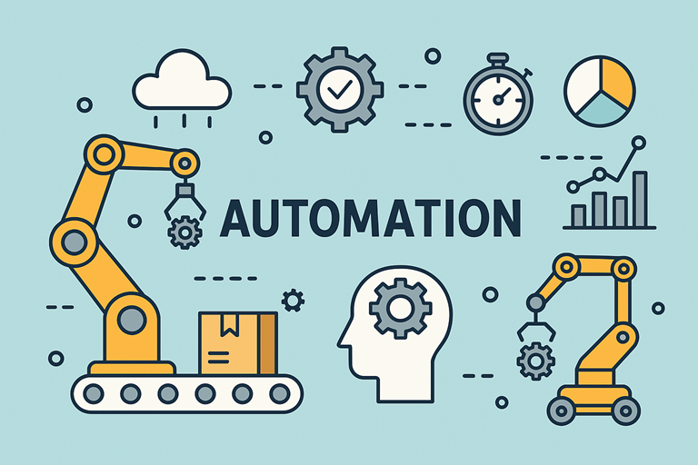

5 Trends Revolutionizing Industrial Automation by 2025
October 15, 2025
8 min read

In 2025, the automation landscape is evolving rapidly, with groundbreaking advancements reshaping warehouse operations. The Middle East, with its booming logistics sector and ambitious smart city initiatives, is at the forefront of adopting these technologies. Here are five key trends defining warehouse automation in the region and beyond.
1. AI-Driven Robotics and Autonomous Systems
Artificial Intelligence (AI) is enhancing the capabilities of warehouse robotics, enabling smarter, faster, and more efficient operations. In the Middle East, where large-scale distribution centers cater to diverse markets, AI-powered robots are transforming processes such as:
✅ Automated Storage and Retrieval Systems (AS/RS): AI-driven robotic shuttles optimize picking and storage, minimizing human intervention.
✅ Autonomous Mobile Robots (AMRs): These robots navigate warehouses independently, improving efficiency in picking, packing, and replenishment.
✅ Predictive Maintenance: AI algorithms detect equipment wear and suggest proactive maintenance, reducing downtime.
2. Warehouse Digital Twins for Real-Time Optimization
Digital twins—virtual replicas of physical warehouses—are revolutionizing operations. By integrating IoT sensors and AI analytics, these models allow real-time monitoring and scenario testing. Benefits include:
✅ Dynamic Inventory Management: Optimizing stock placement and reducing storage inefficiencies.
✅ Process Simulation: Testing operational changes before implementing them in real life.
✅ Enhanced Decision-Making: AI-driven insights help warehouse managers improve workflows and reduce bottlenecks.
Middle Eastern e-commerce giants and supply chain firms are leveraging digital twins to enhance warehouse efficiency and reduce costs.
3. Advanced Automated Fulfillment with 5G Connectivity
With the rollout of 5G across the Middle East, warehouse automation is reaching new levels of efficiency. Key advantages include:
✅ Ultra-Low Latency: Ensuring seamless communication between automated systems and robotics.
✅ Real-Time Data Processing: Allowing instant tracking and optimization of warehouse activities.
✅ Scalability: Supporting the rapid expansion of fulfillment centers in high-demand regions like the UAE and Saudi Arabia.
5G-powered automation is particularly crucial in managing the high volume of cross-border trade facilitated by Middle Eastern free zones.
4. Sustainability-Driven Smart Warehousing
Sustainability is becoming a priority in automation strategies. As Middle Eastern governments push for greener logistics, warehouses are adopting:
✅ Energy-Efficient Robotics: Using AI to optimize power consumption and reduce waste.
✅ Automated Recycling Systems: Enhancing material sorting and waste management in fulfillment centers.
✅ Smart Climate Control: AI-based temperature regulation for cold chain logistics, essential for the region’s growing pharmaceutical and food industries.
Companies in Dubai’s Jebel Ali Free Zone and Saudi Arabia’s Vision 2030 initiatives are investing in sustainable automation to align with global ESG standards.
5. Integration of Blockchain for Transparent Supply Chains
Blockchain technology is enhancing transparency and security in warehouse automation. Key applications include:
✅ Real-Time Inventory Tracking: Ensuring accurate, tamper-proof data across supply chains.
✅ Automated Smart Contracts: Reducing delays in payments and order processing.
✅ Counterfeit Prevention: Securing product authenticity through blockchain-verified transactions.
Middle Eastern governments and enterprises are integrating blockchain to enhance trust and efficiency in logistics, particularly in industries like luxury goods and pharmaceuticals.
Conclusion
The Middle East is at the forefront of warehouse automation, driven by AI, 5G, digital twins, and sustainability-focused innovations. As the region continues to invest in cutting-edge technology, businesses that embrace these trends will stay ahead in an increasingly competitive landscape. The future of warehouse automation in the Middle East is not just about efficiency—it’s about intelligent, sustainable, and highly connected supply chains.